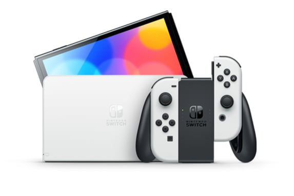
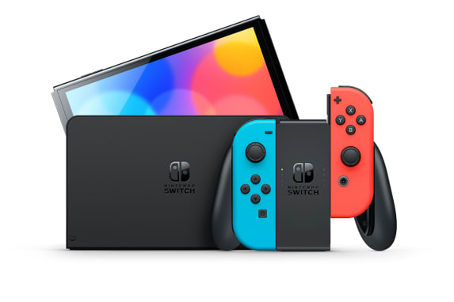

Nintendo Switch

Nintendo Switch – OLED Model


Nintendo Switch – Modelo OLED incluye una pantalla de 7 pulgadas con un marco más fino. Los colores intensos y el alto contraste de la pantalla proporcionan una experiencia de juego portátil y de sobremesa enriquecedora, y aportan mucha vida a los juegos, tanto si compites a gran velocidad sobre el asfalto como si te ves las caras con enemigos temibles. 349.99$
Comprar
Nintendo Switch


Nintendo Switch se transforma para adaptarse a tu situación y te permite jugar a los títulos que quieras aunque no tengas mucho tiempo. Es una nueva era en la que no tienes que adaptar tu vida a los videojuegos: ahora es la consola la que se adapta a tu vida.¡Disfruta de tus juegos cuando quieras, donde quieras y como quieras! 299.99$
Comprar
Nintendo Switch Lite


Con Nintendo Switch Lite se puede jugar a todos los programas de Nintendo Switch que son compatibles con el modo portátil. Es ideal para los usuarios que prefieran jugar fuera o para aquellos que quieran jugar en línea o de manera local en el modo multijugador con familiares o amigos que tengan una consola Nintendo Switch insignia. 199.99$
Comprar